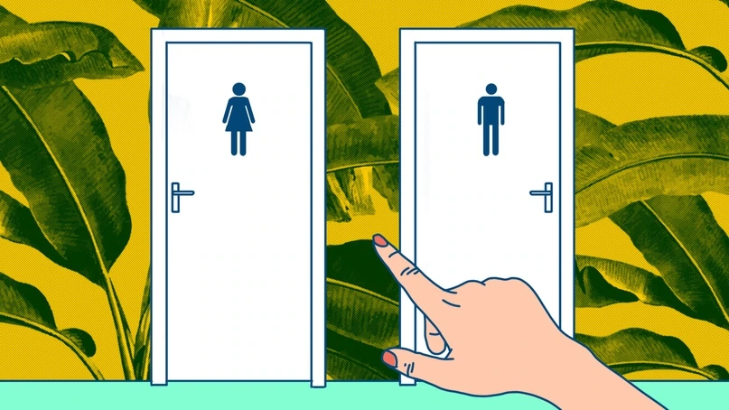
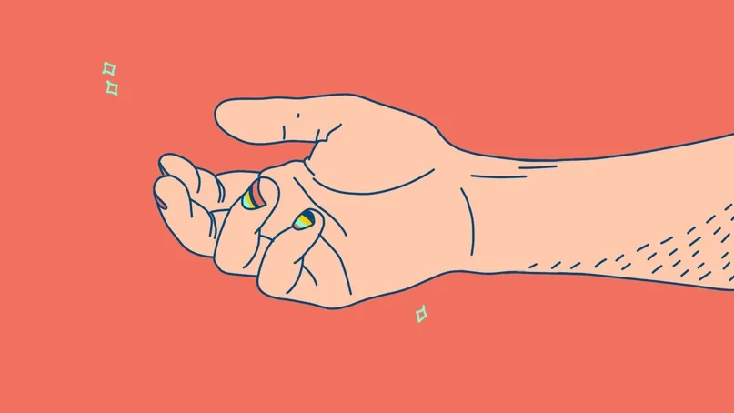

Александр Сорге объясняет, как жонглирование гендером превратилось в забавное шоу и почему это шоу не должно продолжаться

Вот и закончился ежегодный праздник толерантности и терпимости, где лоснящиеся под светом софитов юноши и девушки всех цветов, ориентаций и гендеров поют свои приторно правильные песни про все хорошее без всего плохого — Евровидение.
В нашей стране отношение к этому конкурсу подчас такое, будто бы это не состязание певцов песен ртом, а священная битва за Иерусалим. Пока европейцы отправляют на растерзание толпе своих ноунеймов, мы достаем из криокапсулы боевого лэйзербоя модели СЕРОЖА-1, чистим ему глотку, отбеливаем зубы и вместе с армией его виртуальных клонов бросаем защищать честь Родины. Хотя, казалось бы, кому, кроме второсортного писаки, которому нужно высасывать темы из пальца, вообще есть дело до Евровидения после его завершения?
Кто-нибудь помнит победителя 2017 года? А песни милой пухляшки, которая в прошлом году принесла победу Израилю, звучали где-либо, кроме конкурса? Рыбак со своей феритейл вообще жив?
Все это беснование еще забавнее наблюдать в стране, где власть денно и нощно вещает, что мы в кольце врагов, сластолюбцев и нечестивцев и что сие кольцо постоянно сужается, а оттого и россиянам нужно сжать свои анальные кольца и крепчать. А «эстрада», представители которой едут на конкурс, заглатывает власти настолько глубоко, что уже непонятно, где кончается рот артиста, которым он поет свою, простигосподи, музыку, и начинаются гениталии обладателя депутатской корочки. Но Евровидение каким-то магическим образом вписывается в общую картинку, хотя, казалось бы, это самый настоящий бал Воланда: рассадник содомии с сосущимися мужиками, бородатыми женщинами и прочими сортами бесноватых.
Возможно, это всем уже просто надоело. Бородатые женщины и женоподобные мужчины теперь почти не вызывают удивления, а жонглирование гендерами стало увлекательной потехой: если раньше перспектива сменить пол вызывала как минимум недоумение, то сегодня Олег сам радостно становится Ольгой, просто примерив на себя новый фильтр Snapchat. Баловство с собственной сексуальностью стало чем-то обыденным и даже скучным.
Все больше духовно богатых школьников и школьнесс обнаруживают, что они не заурядные подростки, а особенные, аки иксмены профессора Ксавье: транс, ульта и прочие убергендеры. И осилить даже школьную программу по математике они не могут не потому, что смотрят мемы во время урока, а потому что их угнетают.
Сегодня, если ты хочешь выделиться, не обязательно лезть на баррикады или жечь глаголом, достаточно заявить, что ты ощущаешь себя файлом .txt, запертым в теле человека, ну или боевым вертолетом Apache. А Facebook любезно предложит тебе выбрать из 58 вариантов в графе «пол» (собери их все!). Я вот посмотрел «Детектива Пикачу» и тоже осознал, что я не просто транс, а мультитрансгендер: Райан Рейнольдс, который заперт в теле покемона, запертого в теле человека. Поэтому поверьте мне на слово, обеспечьте льготным проездным на трамвай и бесплатным капучино с виски по четвергам, а иначе вы все — трансфобы и просто отвратительные люди.
Все эти игры, как и Pokemon Go, естественно, часть коварного плана ЦРУ, синтезированного в плесневелых бункерах Моссада. И направлен этот план на то, чтобы сломить копья, кресты, скрепы и прочий духовный металлолом русского народа.
Осознание
Ну а если серьезно, вопрос гендера действительно очень скользкий. Гендер, точнее гендерная идентичность, — это то, кем ты себя ощущаешь: мужчиной, женщиной или сложным биороботом. Этим он отличается от биологического пола, который определяется наличием пениса или ваджайны между ног, и сексуальной ориентации, которая зависит от того, партнеров какого пола вы предпочитаете.
С одной стороны, гендерную идентичность действительно невозможно внушить или навязать. Даже если вы кастрируете сына и будете воспитывать его как свою маленькую принцессу — одевать в платьица с рюшечками и повязывать бантики, — из него все равно вырастет мужик, хоть, возможно, и не такой суровый. Это подтверждается исследованием, в ходе которого наблюдались 14 мальчиков, родившихся без пениса (дефект, известный как клоакальная экстрофия). Остатки их гениталий были удалены по медицинским показаниям, а самих мальчиков было решено воспитывать как девочек. Несмотря на это, при взрослении у каждого из них появлялись типично мальчишеские интересы и мужские паттерны поведения. Четверо из них спонтанно заявили, что они мальчики, один — в возрасте семи лет. Похожий случай произошел с Брюсом Реймером, который не по своей воле стал Брендой. Брюс в раннем детстве лишился пениса из-за неудачного обрезания, и психолог посоветовал растить ребенка как девочку. Несмотря на то что родители скрывали реальный пол, Бренда все равно ощущала себя мальчиком и в конце концов попыталась свести счеты с жизнью.
С другой стороны, эти исследования и история Реймера также доказывают и биологическую природу цисгендерности (когда гендер совпадает с полом). А вот достоверных медицинских исследований, которые однозначно бы подтверждали, что гендерная идентичность не зависит от биологического пола и что гендеров действительно чуть больше, чем два, нет. Доводы магистров и магистерок гендерных наук, естественно, не в счет. Ведь их псевдонаучные исследования часто не лучше моей писанины: это доказали трое ученых, которые написали 20 абсурдных статей, посвященных проблемам «жалобных исследований» (ей-богу, термин не мой). Семь из них были приняты к публикации в рецензируемых журналах, четыре опубликованы онлайн.
Более того, невозможно выделить какие-либо объективные проявления трансгендерности, в отличие от, например, сексуальной ориентации, объективное проявление которой — стойкое влечение к индивидам своего или противоположного пола. Концепция гендерной идентичности, по сути, начинает вращаться вокруг личных убеждений, а личные убеждения человека, как известно, очень пластичны и формируются под воздействием общества. Это не значит, что гендер может сформироваться под давлением окружения (исследования показали, что это невозможно). Это значит, что личные убеждения легко принять за собственную гендерную идентичность.
Как в детской игре: длинная палка и мамин шарф на глазу не делают тебя пиратом, однако ты самозабвенно веришь в свою пиратскую сущность, даже если в глубине души понимаешь, что ты не пират. Опять же, я не говорю, что трансгендерность — байка диавола, а сами трансгендерные люди какие-то неправильные, вовсе нет.
Я веду лишь к тому, что в такой игре становится невозможно отличить реальных пиратов от мнимых.
Влечение
Те, кто дочитал до этого абзаца, могут подумать, что я махровый гомофоб. Особо рь��ные берсерки социальной справедливости наверняка уже кинулись биться в комментариях. Что ж, как и просил дедушка Цой — пожелаем им удачи в бою. Однако, мои маленькие поборники традиционных ценностей, перестаньте придушивать себя в блаженном экстазе и отложите свои любимые секс-игрушки. Сейчас я скажу крамольную вещь, но даже несмотря на все эти гендерные забавы, никакой гей-пропаганды не существует. Существуют ушлые маркетологи и не менее ушлые хайпожоры, которые умело эксплуатируют модные тренды политкорректности и толерантности, поднимая бабло на доверчивых фунтиках. Терпимость к разного рода меньшинствам для любой корпорации, будь то EA или H&M — лишь красивая ширма, которая позволяет увеличить прибыли и которой можно прикрыться, чтобы не получить клеймо какого-нибудь фоба. Но даже если бы эта пресловутая пропаганда существовала — она бы не сработала. Как уже было сказано, у сексуальной ориентации есть объективное проявление — то, к каким людям вас тянет. И подделать эти проявления невозможно: нельзя заставить любить, нельзя любить кого-то по указке.
Можно убедить человека в том, что бочка говна — это бочка липового меда, можно даже убедить человека съесть этот «мед». Но вряд ли вам удастся заставить его при поедании получать удовольствие, даже если ему будут попадаться кусочки лесного ореха.
В бытность свою, когда половое созревание знатно ударило по моим бубенцам в школе, меня начали привлекать именно задницы одноклассниц и их только начинающие набухать груди. Юные жопы одноклассников в мужской раздевалке у меня как-то не вызывали интереса. Да и сейчас перспектива поворошиться в мужской заднице не особо радует, а уж запустить чужой космический корабль в свою черную дыру — и подавно. Более того, ничего бы не изменилось, даже если бы в отрочестве меня заставляли, аки Алекса ДеЛарджа в фильме Кубрика, часами смотреть «Горбатую гору». Ориентацию уже пытались изменить, пробуя «лечить» гомосексуализм с помощью богатого арсенала карательной психиатрии: от электрошока до лоботомии — не получилось, не вышло.

Не существует никаких гей-спор, от которых можно вылечиться или заразиться ими, так что если вы случайно сели на черенок от лопаты и поняли, что вставать, в общем-то, не очень хочется, — у меня для вас плохие новости. Ну или хорошие — это как посмотреть. Да, на то, в кого вы будете тыкать своим стручком или перед кем распахнете ворота своей вагины влияет колоссальное количество факторов. Но вычленить из этого объема социальный просто невозможно, тем более, что он не является решающим. Американская психологическая ассоциация, Американская психиатрическая ассоциация, Национальная ассоциация социальных работников в 2006 году заявили:
Подавляющее большинство взрослых лесбиянок и геев были воспитаны гетеросексуальными родителями и подавляющее большинство детей, воспитанных родителями геями и лесбиянками, вырастая, являются гетеросексуальными.
А вот заявление Королевской психиатрической коллегии (главная профессиональная ассоциация психиатров Великобритании) 2007 года:
Несмотря на почти вековые психоаналитические и психологические спекуляции, не существует никаких независимых свидетельств, подтверждающих предположения, что характер воспитания или ранний детский опыт играют какую-либо роль в формировании фундаментальной личностной гетеросексуальной или гомосексуальной ориентации.
Ненависть
Во всей этой канители мне непонятно одно: почему к задницам совершенно незнакомых людей приковано внимание колоссального количества гетеросексуальных мужчин? Хотя вреда от геев столько же, сколько и от Евровидения. Поскольку за пропаганду гомосексуализма в прекрасной России настоящего положена путевка в государственный санаторий, а следующие слова могут показаться товарищу майору именно пропагандой, дальше я буду рассуждать о иксменах.
Ну так вот, послушай некоторых, так иксмены — это какое-то мировое зло, хотя мне не очень понятно, чего такого ужасного они могут наворотить, что надо сжигать их сердца. Отымеют всех мужиков и поставят на радужную дорогу? Это, как мы уже выяснили, невозможно, а о мужских изнасилованиях и ролевых играх с бутылкой слышно только из мест не столь отдаленных. Разозлят Господа Бога? Так он вместе со своим сынишкой давно уже покинул эту грешную землю. По крайней мере, судя по тому, как его слуги в рясах балуются упругими попками юношей, а его сыны взрывают неверных и расстреливают иноверцев. При этом аргументы таких «духовных скреп» сводятся либо к разрушению каких-то абстрактных норм морали, либо к фантастическому «вымиранию человечества». Мол, разрушается институт семьи — ну так брак, судя по статистике разводов и домашнего насилия, никогда не был залогом крепкой семьи. Заразят всех СПИДом? Ну так на долю нетрадиционных контактов приходится всего 2% от общего количества заражений, остальное — это грязные шприцы и традиционный секс.
Вся эта возня вокруг гендеров давно уже превратилась в шоу на западном ТВ, такое же нелепое, как и Евровидение. И не разобрать, кто реально поет, а кто просто открывает рот, потому что так делают все. Движение против дискриминации из-за наплыва неравнодушных и сочувствующих вылилось в модный тренд, к которому примазываются все кто угодно.
Для коммерсов этот тренд стал удобной цветастой ширмой, которая позволяет стричь с доверчивых барашков больше денег и показывать всем, какие они молодцы. Ну а то, что за этой ширмой стоят заводы, где женщины работают по 12 часов, они предпочитают умолчать.
Самое забавное, что эксплуатация этого тренда выгодна всем. Одни, вопя об угнетении, выторговывают себе привилегии, против которых они так отчаянно борются. Другие же, намеренно сгущая краски и смешивая всех в одну кучу, твердя о какой-то мифической пропаганде, выбивают себе политические дивиденды и места в скверах под строительство златоглавых торговых центров.
Ну почти всем. Ведь когда на этом представлении ты пытаешься достать условный «флаг Палестины» — начать говорить о реальных проблемах: например, о том, что толерантность не означает вседозволенность, или о том, что в некоторых странах убивают людей просто за их ориентацию, тебя вырезают из эфира. Реальные проблемы, пожалуйста, оставьте за ширмой в гримерке — на сцене шоу должно продолжаться.
Самое печальное, что в нашей стране это метафорическое Евровидение, в отличие от реального, воспринимается именно как шоу, которое смотрят и охают: одни из сожаления и сострадания, другие из ненависти и отвращения. Его участники кажутся диковинными артистами, которые потешно падают на банановой кожуре, а не реальными людьми, пусть и немного другими, с реальными проблемами. И живут эти люди не среди сценических декораций, а среди панельных многоэтажек.